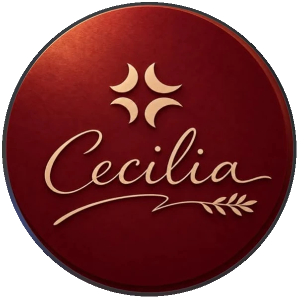

CRUJIENTE · CÍTRICO · PARA COMPARTIRFoto de referencia · fuente ↗
CRUJIENTE · CÍTRICO · PARA COMPARTIRFoto de referencia · fuente ↗01 / ENTRADACeviche crujiente
$30.000COPCeviche crujiente
de chicharrones
Un equilibrio vibrante que despierta el paladar.

CECILIACOCINA · ENCUENTRO · CELEBRACIÓN
Pasa, aquí se come rico y se conversa mejor
Ven con hambre y sin afán: aquí te servimos rico, te hacemos sentir en casa y la sobremesa suele ganarle al reloj.
01 / 03 COCINA · ENCUENTRO · CELEBRACIÓN
En Cecilia no tienes que esperar una ocasión especial para sentirte especial. Ven por algo rico; quédate porque la conversación está buena. Y si te consentimos más que en casa, no aceptamos reclamos de tu familia.
Conoce a la familia CeciliaCada bocado es el inicio de una historia en la mesa.
CRUJIENTE · CÍTRICO · PARA COMPARTIRFoto de referencia · fuente ↗Un equilibrio vibrante que despierta el paladar.
 INTENSO · CON CARÁCTER · TRADICIONALFoto de referencia · fuente ↗
INTENSO · CON CARÁCTER · TRADICIONALFoto de referencia · fuente ↗Una entrada intensa con carácter y sabor a tradición.
Toca “Guardar mi antojo” y arma tu pequeña lista. Es solo una interacción visual; no genera un pedido.
Ver la carta completaPLATOS PRINCIPALES
Recetas de casa, saboreadas como en familia.
 REFERENCIA VISUAL
REFERENCIA VISUALTradición costeña y sabor de casa en cada cucharada.
 REFERENCIA VISUAL
REFERENCIA VISUALUna receta de tradición para disfrutar sin afán.
PLATOS PRINCIPALES
Salsas con carácter que vuelven cada bocado inolvidable.
 REFERENCIA VISUAL
REFERENCIA VISUALBarbecue con carácter y ese toque que distingue a Cecilia.
 REFERENCIA VISUAL
REFERENCIA VISUALPechuga enrollada y acompañada por la salsa de la casa.
PLATOS PRINCIPALES
Al punto justo: cortes jugosos, dorados y llenos de sabor.
 REFERENCIA VISUAL
REFERENCIA VISUALSabor casero y ese doradito que abre el apetito.
REFERENCIA VISUALUn corte protagonista para disfrutar sin mirar el reloj.
PLATOS PRINCIPALES
Pastas cremosas y reconfortantes para saborear despacio.
 REFERENCIA VISUAL
REFERENCIA VISUALTextura cremosa y camarones en cada bocado.
 REFERENCIA VISUAL
REFERENCIA VISUALUna salsa cremosa que abraza cada hebra.
PLATOS PRINCIPALES
Aromático, generoso y acompañado para compartir.
 REFERENCIA VISUAL
REFERENCIA VISUALArroz de camarón acompañado de patacones y aguacate.
PARA LOS MÁS PEQUEÑOS
Sus favoritos, preparados para disfrutar en familia.
REFERENCIA VISUALUna opción sabrosa para que los pequeños también disfruten.
 REFERENCIA VISUAL
REFERENCIA VISUALLa dupla favorita para comer rico y salir feliz.
POSTRES
Un final dulce con recuerdos de casa.
 REFERENCIA VISUAL
REFERENCIA VISUALUn clásico de coco con presentación especial.
 REFERENCIA VISUAL
REFERENCIA VISUALSuave, húmedo y con todo el encanto caribeño.
POSTRES
Fruta y frescura con un giro dulce.
REFERENCIA VISUALLigero, fresco y con carácter tropical.
 REFERENCIA VISUAL
REFERENCIA VISUALUna especialidad de la casa para cerrar con sorpresa.
POSTRES
Una pausa fresca, colorida y muy tropical.
 REFERENCIA VISUAL
REFERENCIA VISUALCremoso, refrescante y hecho para disfrutar sin afán.
REFERENCIA VISUALFrutas tropicales en una combinación fresca y colorida.
POSTRES
Tradición costeña para terminar con una sonrisa.
REFERENCIA VISUALUn clásico de nuestra cocina en una versión especial.
 REFERENCIA VISUAL
REFERENCIA VISUALDulce tradición costeña en cada cucharada.
BEBIDAS
Vinos, cócteles y bebidas con el sello de Cecilia.
 REFERENCIA VISUAL
REFERENCIA VISUALUn clásico para acompañar la mesa.
REFERENCIA VISUALFresco y elegante para brindar a tu manera.
 REFERENCIA VISUAL
REFERENCIA VISUALUn brindis fresco para alargar la conversación.
BEBIDAS
Clásicos que convierten cualquier mesa en celebración.
 REFERENCIA VISUAL
REFERENCIA VISUALUn clásico cítrico con espíritu de celebración.
 REFERENCIA VISUAL
REFERENCIA VISUALUn sorbo tropical para cambiar de paisaje.
BEBIDAS
Opciones frescas, frutales y llenas de color.
REFERENCIA VISUALUna bebida fresca con el carácter floral de Jamaica.
REFERENCIA VISUALUn giro frutal y refrescante para disfrutar a tu ritmo.
 REFERENCIA VISUAL
REFERENCIA VISUALColor, frescura y un toque frutal en cada sorbo.
BEBIDAS
Frescura recién servida, con sabores que se antojan.
REFERENCIA VISUALLa frescura del limón con un giro de coco.
 REFERENCIA VISUAL
REFERENCIA VISUALCítrica, fresca y con aroma de hierbabuena.
“Entrar por los ojos, sentirse especial
y quedarse por la experiencia.”
Un lugar para cada ocasión
¿Almuerzo con amigos, celebración familiar o antojo de martes? No hace falta una gran excusa: con que tengas hambre y ganas de pasarla bien, ya tenemos plan.


La familia Cecilia
Los dueños recorrieron restaurantes del municipio buscando gente que supiera hacer algo más que servir una mesa: personas que recibieran con ganas. Les ofrecieron mejores oportunidades; quienes aceptaron hoy son familia Cecilia.
Así que sí: aquí te tratamos con tanto cariño que tu casa podría ponerse celosa. Queremos que la próxima visita ya te haga falta desde la despedida.
El nombre que nos recuerda de dónde venimos
El restaurante lleva el nombre de Cecilia, la madre del dueño. Su historia está en el corazón de esta familia y en la manera de recibir a cada persona.
Cecilia tenía cinco hijos y pocos recursos. Cada día salía a rebuscarse vendiendo empanadas, fritos, arepas y lo que pudiera preparar, para sostener a su familia y darles estudio.
Sus hijos estudiaron, se graduaron y, con trabajo y esfuerzo, empezaron un pequeño restaurante en El Chocó. A Cecilia, que un día trabajó para abrirles oportunidades, sus hijos también quisieron devolverle todo ese amor.
Al restaurante de El Chocó le siguieron sucursales en Montería y Chinú. Hace alrededor de cinco meses, la familia llegó a su sede más reciente, llevando el nombre y el espíritu de Cecilia a una nueva mesa.
Cada plato lleva algo de esa historia: trabajo, cariño y el deseo de que aquí también te sientas parte de la familia.
Una paleta con intención
El significado de esta paleta es una decisión visual de la propuesta para acompañar la historia de Cecilia.
Cumplir años tiene premio
Si celebras tu cumpleaños aquí, el postre y la serenata corren por la casa. Gratis. Tú trae las velitas; nosotros afinamos el coro (con mucho cariño y valentía).
Quiero celebrarUna pausa curiosa
La cocina es ciencia, memoria y un poquito de magia. Toca el botón y descubre un detalle nuevo sobre sabores, ingredientes y Cecilia.
Pequeños datos sobre sabor, aroma e ingredientes.
Tu próxima historia empieza aquí
Tú eliges el día; nosotros vamos preparando la mesa. Haz tu reserva en el sistema de Cecilia y ven a celebrar sin afán.
Reservar mesaNos encantará recibirte
Para conocer horarios y sedes, consulta el icono de ubicación.